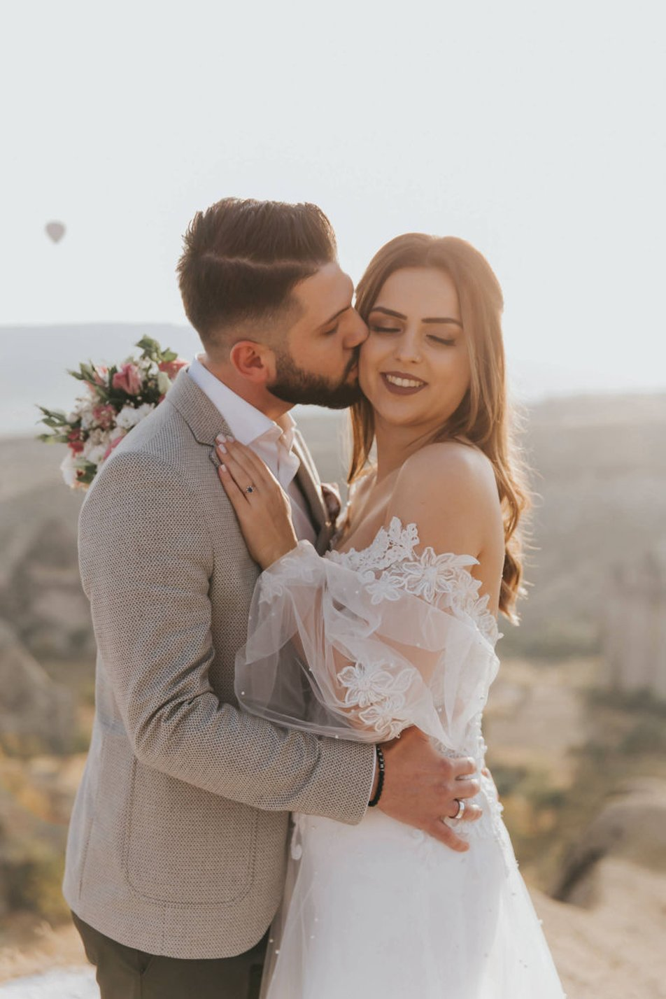

Kapadokya dünya üzerinde inanılması en güç doğal ve eşsiz oluşumların bulunduğu bir coğrafyadır.
Kapadokya yılın her mevsiminde ziyaret edilebilecek bir yerdir. Kapadokya da konaklama için çok fazla alternatif bulunmaktadır. Sizin tercihinize uygun kıyaslama yapabileceğiniz konaklama alternatiflerinin yanında Kapadokya tatiliniz için gelmeden önce kesinlikle araştırma yapmanızı ve ön bilgi edinmenizi de tavsiye ederiz. Dilerseniz harika vakit geçirebileceğiniz bir kapadokya oteli, dilerseniz mükemmel bir seyahat planı yaparak kendinizi dışarı atabilirsiniz. Renk cümbüşünün mevsime ve hava şartlarına bağlı olarak hemen hemen her gün gökyüzünü sıcak hava balonları ile süslediğini belirtmek isteriz. Kapadokya balonlu dış çekim istiyorum diyorsanız, sizde arka planda Kapadokya manzarası ve balonların olduğu düğün dış çekimi ve düğün fotoğrafları istiyorsanız tabi ki tercihiniz Kapadokya olmalı.
Henüz tam manası ile keşfi yapılmamış olan Kapadokya eşsiz doğası ile ve harika unutulmaz aktiviteleri ile sizin hayatınızda çok güzel bir yer edinecektir. Bu unutulmaz atmosferde ömrünüz boyunca saklayacağınız düğün fotoğraflarınız da olabilir. Bir çok aktivite ve açık kapalı müzeleri ile, sadece Kapadokya'da görebileceğiniz Derinkuyu Yeraltı Şehri ve Kaymaklı Yeraltı Şehri , Göreme Açık Hava Müzesi, Avanos Sallanan Köprü , Avanos Çömlek Atölyeleri, Uçhisar Kalesi , Ürgüp Konakları sadece birkaç örnek. Kapadokya Balon Turu yapabilirsiniz. Atv turu, at biniciliği , deve turu da Kapadokya da yapılabilecek aktivitelerden bir kaçı.
BİZİ TAKİP EDİN! :)